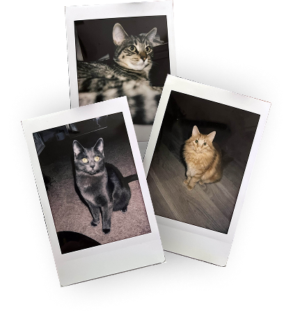

During my research about game design, I read the article, Game Design UX Best Practices, written by Amir Dori, and learned a lot about how games are designed with certain goals in mind. Games are designed to make them addictive so the player wouldn’t want to close the application. This is how good UX design is used to keep players on games.
For example, there is a certain range within a phone screen that players can comfortably reach without having to change their entire hand position. Ideally, users would only have to move their thumbs to interact with the buttons on the screen. Due to this, game designers tend to put interactable objects towards the bottom of the screen for easy reach. Another example can be seen with pop-ups with one “negative” button and one “positive” button. Putting the “positive” or recommended action button on the right side of the screen makes players more likely to pick that one. This can be used strategically for logging out or closing buttons to influence users to stay.
Although there is some grey area of trying to make users addicted to your app, there are still some benefits to understanding good user experience for playing games. Overall, playing a game should be enjoyable for the user, which means we should consider things like how easy it is to reach buttons or how to make a narrative more captivating. That is how you transform a regular game to the next level.
visual thinking analysis
Salimah Rodgers, 2025
This is an image from my partner, it seems like it is an open book with several multi-sided dice resting in the crease of the pages. The most interesting aspect of the image is the angle the picture was taken. This angle exposes the book in a new perspective, dramatizes the space, and emphasizes the dice. The content of the book is unreadable and there are dark shadows and a hazy glow on the edges that give it a mysterious look. The most obvious part of the photo is the form of the book, we can clearly tell it is a book with words and pictures, but we cannot decipher what the book is about.
I think this photo could be more expressive by enhancing the mysteriousness. It is already a pretty mysterious piece but digital editing can add more intense shadows, more haze, a grain or any texture overlay, filters like a Gaussian blur, etc. In particular, the light background in the top left breaks away from the immersion so editing that to be darker could enhance the mystery.

Catelyn Bu, 2025
This image is interesting for its layout and also because they are scans of real Polaroid photos. The content of the Polaroid photos is not very interesting since they are just pictures of my cats. But something you can’t tell just by looking at the photo is that these three kitties are siblings. I have a lot of cats and a lot of cat photos but these are special since they are physical pictures and not digital ones on my phone.
I have a small collection of Polaroid pictures mainly capturing cats and friends. I think this collection demonstrates what I find important to me in life, especially in a time of digital media dominating physical media. I chose to use physical film to capture these moments because they mean a lot to me and the physicality of the the imagery creates more sentimental value.
To make these images more interesting, I think I would keep the Polaroid photo concept, but take pictures of something else. I’m not quite sure what I would like to photograph next but something about daily life, nature, or architecture could have a more reflective power to it. I think taking photos of the small things in life could lead to a narrative of appreciating the life you have, a reflection of how you’ve grown as a person, or an opportunity to reminisce on past experiences/memories.
imagery & interactions in websites
I read the article 10 Intriguing Photographs to Teach Close Reading and Visual Thinking Skills and learned that a method to improve thinking skills is by analyzing complex images without being given any context. This requires an individual to create a claim about a certain image and ponder what is going on in the photograph, why they believe that is, and what else about the image can they find. According to the article, this practice helped people learn how to describe things in detail and defend their claims with evidence. I think this technique is a great way to get better at argument-making and critical thinking.
A website I found that uses imagery and interactions well is Joonas Sandell’s Portfolio. This website takes interaction to the next level by having multiple different kinds of user interactions like scroll position, hover, and automatic animations. The way this site uses imagery allows the user to control what happens. As a representation of his work and skills, it is certainly effective in achieving a dynamic and memorable experience for the user.
The only drawback I can see with this portfolio website is that it’s a bit overwhelming. So although the interactions and animations are very impressive, at times it’s a bit too much. It may be a bit confusing to understand what is clickable and too distracting to read the content. With that in mind, it might be better to reduce the amount of user interactions to prevent confusion.
modals, overlays, & dialog windows
After reading more about Best Practices for Modals / Overlays / Dialog Windows in an article written by Naema Baskanderi, I learned how to incorporate overlay screens in my designs and why these best practices are important.
The best times to use a modal are when you want to grab the user’s attention, need user input, want to show additional info in context, and to show independent content. It’s also incredibly important to have multiple methods the user can exit these screens. It is imperative that users can use the escape key to exit modals in addition to having a button or two that says “cancel,” “exit,” or “x.” This way users can always have the ability to move screens and exit with no problem. Another way to prevent confusion is by darkening the background the modal appears on top of. This allows the user to focus on the dialogue box and helps them realize that the previous screen is now hidden and that they must complete or exit the overlay window first.
For mobile devices, overlay windows are not recommended since they fit awkwardly on the screen and may have issues with usability due to scrolling and visibility.
researching form design
In Best practices for form design, an article written by Salim Ansari, I learned about key points to keep in mind to create intuitive and easy to use forms. I thought Ansari brought up great examples on how to make form designs that are human-centered for best readability and to reduce cognitive overload. Many people do not enjoy filling out forms so some tips from Ansari to ensure users fill them out are reducing the amount of required steps or areas to fill out, keeping elements vertically aligned to cater to how we naturally read up to down, and appropriately using labels to provide context to the users.
Form feedback was another major point made by Ansari. By creating a screen that confirms or restates the action just made by the user it reassures them that their inputs went through. This overall imrpoves user experience and preventsconfusion on wherter or not their response or action was understood by the program or website.
One example of a good form design is with Handshake’s profile editing. This form is super simple with labels on top of form fields, a vertical alignment of fields, and has a descriptive button at the end to complete the form.